피쉬레스트 v30 시안
시안 러버덕 새 컨셉 17종 (게임 미적용)
v28 퀄리티: JDSherbert 원본 메시 + 색·소품. 게임에 넣지 않음 — 선정 후 적용.
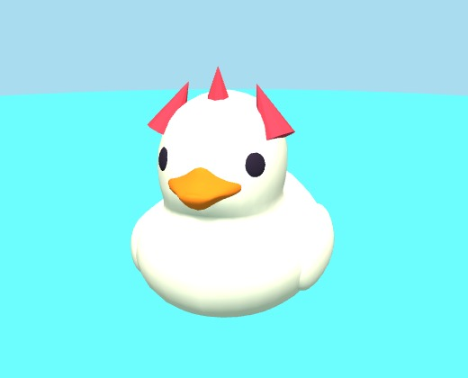
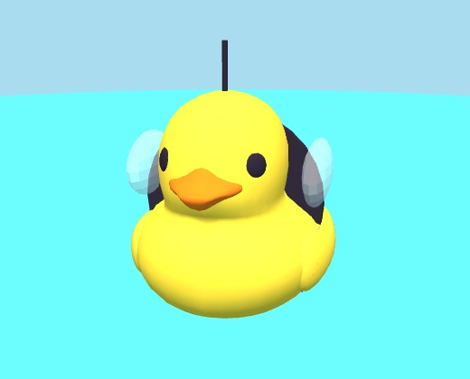
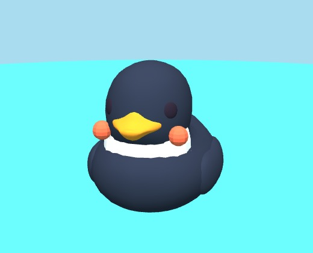
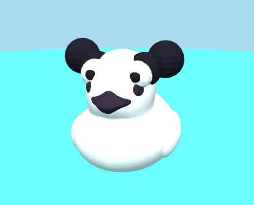
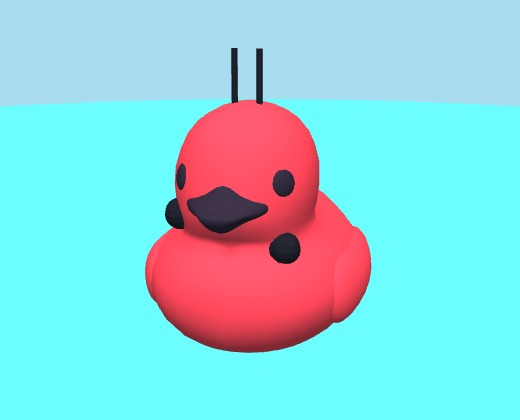
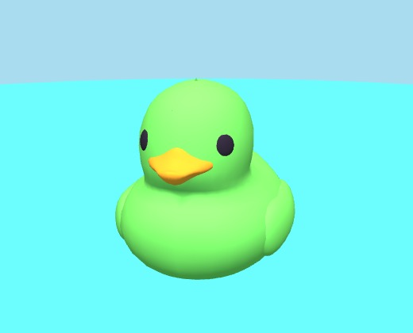
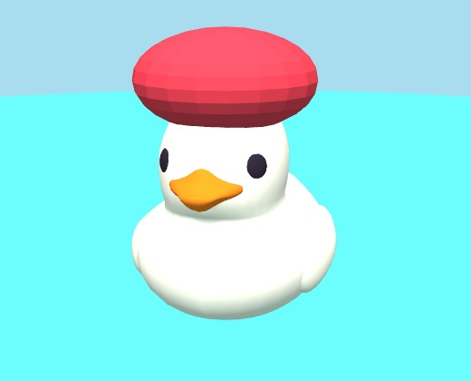
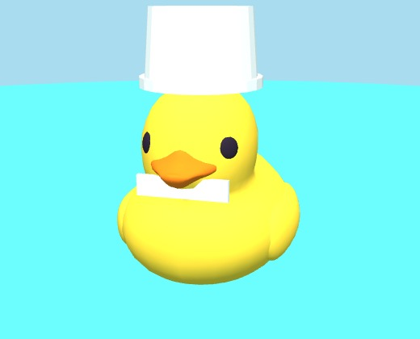
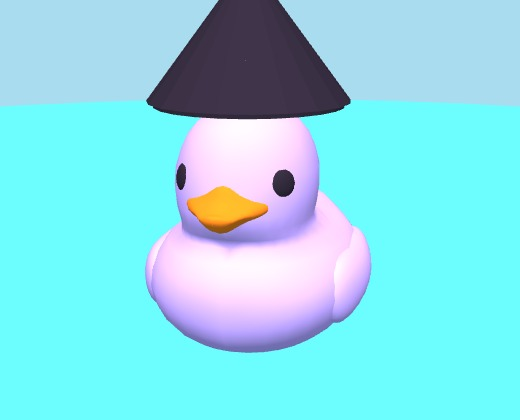
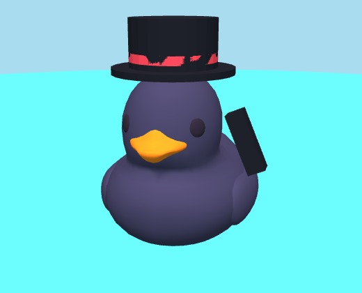
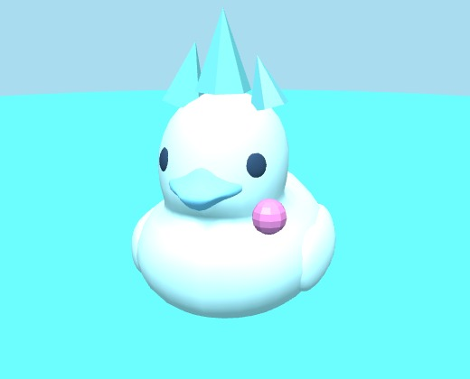
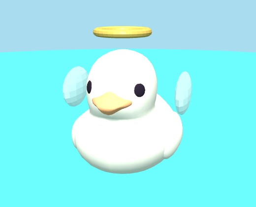
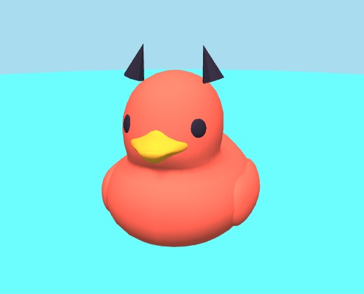
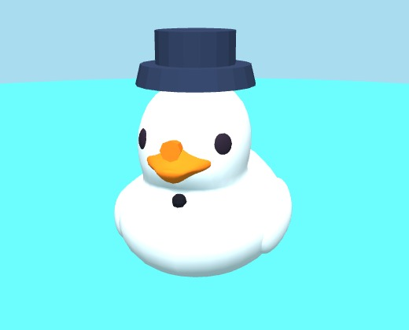
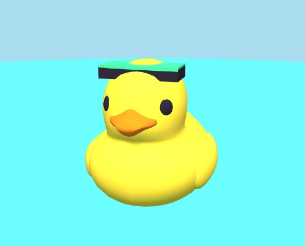
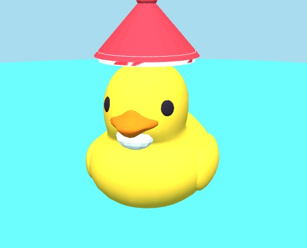
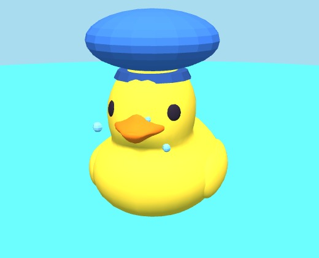
✅ 적용 — 가방 B1-A 대조
v27 B1-A 시안과 전·후 스샷을 나란히 비교.


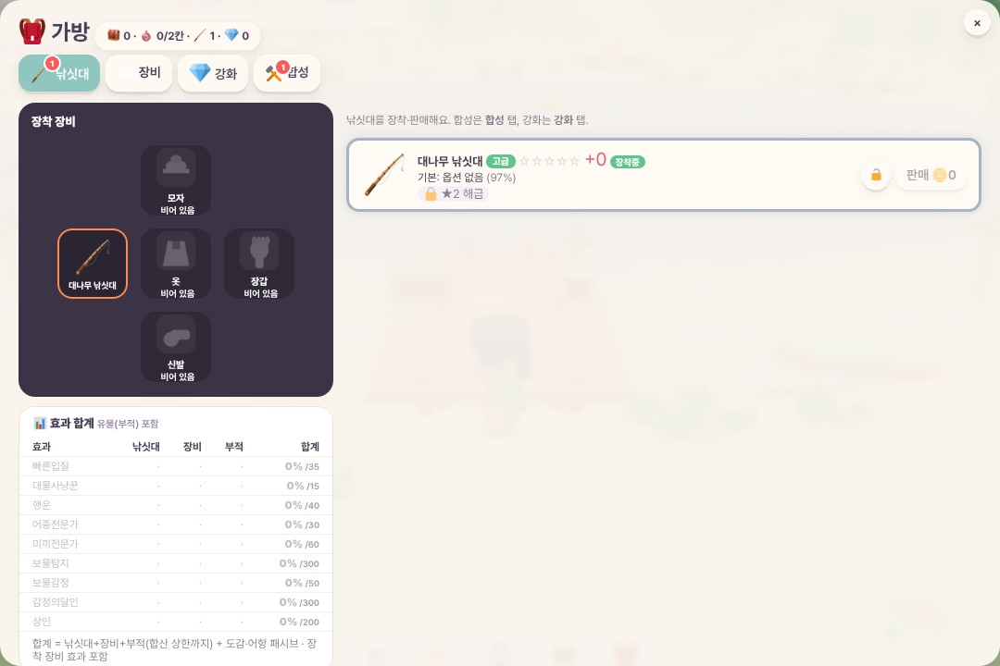
✅ 적용 — AI 의자 낚시 · 러버덕 순환
AI는 데크 stool(의자)에 앉아 낚시. 러버덕: 첫 마리 base → 켜진 종류 셔플 순차(중복 없이) → 최대 시 오래된 것 페이드아웃.